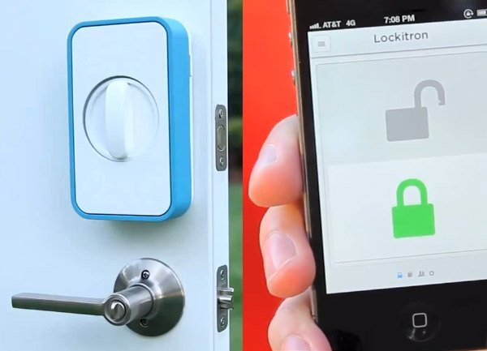

Kunci Rumah dengan Smartphone (Lockitron)
Nama Kelompok:
- Sondang Purba (161112413)
- Aunia Limsari (161113915)
- David Aprianto(161112812)
- Ricky Marthin (161114341)
Latar Belakang
Dengan adanya konsep smart home, segala aktivitas dalam rumah tangga menjadi lebih mudah dan praktis. Hanya dengan mendowload aplikasi "lockitron" di Smartphone, seluruh anggota rumah tersebut dapat membuka dan mengunci pintu hanya dengan menggunakan aplikasi tersebut.
Dengan cara ini dapat meminimalisir terjadinya kerusakan atau kehilangan kunci bahkan resiko kemalingan. karena yang bisa membuka kunci tersebut hanyalah pemilik rumah yang menggunakan aplikasi "lockitron" di dalam Smartphone
LOCKITRON
Lockitron adalah sebuah teknologi mengagumkan yang dirancang untuk membuka pintu rumah kamu menggunakan smartphone. Alat ini selalu terhubung ke internet dengan menggunakan Wi-Fi, yang memungkinkan pengguna untuk mendapatkan akses dari mana saja di dunia.
Spesifikasi Teknologi Lockitron
Lockitron adalah gembok canggih yang memanfaatkan perangkat smartphone atau ponsel Anda sebagai kunci untuk membukanya. Perangkat ini telah dilengkapi dengan konektivitas Wi-Fi dan Bluetooth 4.0 yang berguna untuk terhubung ke perangkat smartphone Anda.
Berikut gambar Lockitron:
Kegunaan Lockitron
Lockitron juga memiliki kegunanaan lain. Anda sebagi admin dapat mengundang beberapa teman atau keluarga untuk berbagi akun lockitron yang anda miliki agar mereka juga dapat membuka lockitron tanpa perlu kehadiran anda. Dan bagi para pengguna ponsel, untuk menjalankan lockitron anda cukup mengirim perintah untuk membuka lockitron lewat sms.
Lanjutan Kegunaan..
Lockitron juga tetap memperbolehkan penggunaan kunci manual, keuntungan ganda yang diperoleh jika memggunkan lockitron yaitu semua data ter-enkripsi didalam cloud (online server). Sehingga tidak sembarang orang bisa memilik akses. Kita bisa saja membuat key untuk dibagikan dengan keluarga atau teman untuk tetap bisa mengontrol lockitron.
Cara Kerja Locktrin
Cara kerja Lockitron cukup sederhana dan untuk menggunakannya juga sangat mudah. Bagi para pengguna iOS, Pertama Anda harus menghubungkan Lockitron ke jaringan dirumah dan pastikan telah terhubung ke internet. Buatlah sebuah akun utama (admin) lalu unduh aplikasi Lockitron via AppStore. Jika telah selesai, Anda cukup terhubung ke internet, jalankan aplikasi Lockitron, lalu masukkan akun yang telah Anda buat dan dengan segera Anda dapat mengunci dan membuka Lockitron kapan dan dimana saja.
Lanjutan Cara kerja Lockitron...
Lockitron digunakan secara berbeda tergantung pada apa perangkat yang digunakan. Untuk pengguna iPhone, kunci dapat dibuka secara otomatis dengan mendekati pintu, melalui teknologi Bluetooth 4.0. Untuk ponsel Android yang memiliki NFC (Near Field Communication), mereka bisa hanya dengan melambaikan perangkat mereka di depan Lockitron. Perangkat ini juga memiliki sensor ketukan. Jika seseorang mengetuk pintu, pemilik rumah akan menerima pemberitahuan yang menginformasikan mereka tentang tamu yang tiba.
Fitur Lockitron
Fitur canggih juga hadir untuk melengkapi Lockitron seperi misalnya fitur notifikasi yang akan mengirimkan informasi seperti pintu yang belum terkunci atau baterai Lockitron yang perlu diisi ulang kembali dan fitur sensor yang akan menginformasikan kepada Anda jika ada yang mengetuk pintu rumah. Selain untuk mengamankan rumah Anda, Lockitron juga hadir dengan fitur keamanannya sendiri. Perangkat ini telah dilengkapi dengan sinyal yang telah dienkripsi dan jika sewaktu perangkat iOS Anda hilang atau di curi orang, Anda juga dapat langsung menonaktifkan aplikasi Lockitron dari jarak jauh. Bahayanya, ada kemungkinan aplikasi ini bisa diretas sehingga kunci dapat diakses orang lain.
Keunggulan Lockitron
Keunggulan lainnya menggunakan lockitron ini adalah dapat untuk mengatur jadwal sehingga bisa mengunci pintu secara otomatis. Oleh karena itulah Anda tidak perlu untuk repot lagi membuka ataupun mengunci pintu. Karena semua itu sudah bisa diatur dengan lebih praktis dan cepat dari gadget lockitron pada
Kelebihan Lockitron:
- Kunci rumah hanya bisa di buka dengan menggunakan smartphone.
- Mengurangi terjadinya resiko kemalingan atau kehilangan barang dari rumah.
- Kunci Rumah hanya bisa di buka oleh pemilik rumah karena hanya pemilik rumah yang menggunakan aplikasi dari “Lockitron” tersebut.
Kelemahan Lockitron:
- Bisa diretas oleh orang yag tidak bertanggung jawab.
- Jika Smartphone hilang maka kunci rumah tidak bisa terbuka
- Harganya Lumayan Mahal.